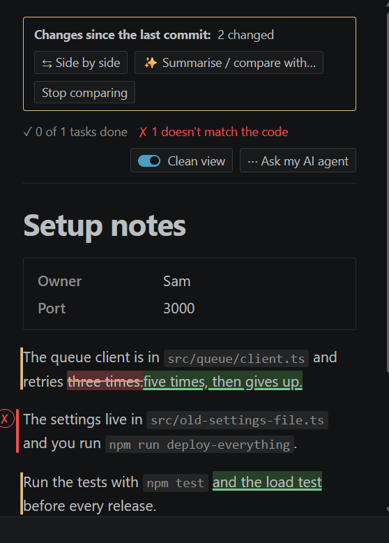
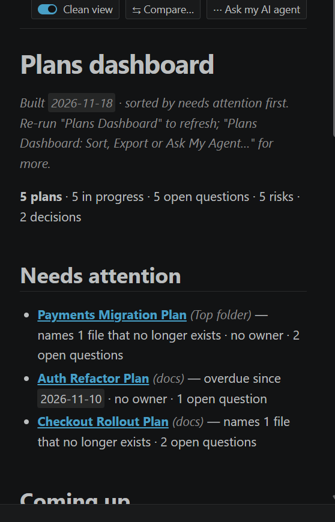

Your project's docs, easy to read and safe to trust
A free add-on for VS Code. It turns plans, specs and AI-written notes into clean pages, and shows you which ones are out of date.
- Free
- No account, no tracking
- Works with the AI you already use

A week with docmap
Five everyday problems, and the one click that fixes each.
-
Monday
“I just joined. There are 60 docs. Where do I even start?”
Where Do I Start? gives you a short reading order, with one line on why each doc matters.
See how → -
Tuesday
“The AI wrote me a long plan. It reads like a wall of symbols.”
Clean view turns it into a page: owner cards, note boxes, coloured statuses, a progress bar.
See how →
-
Wednesday
“I followed the setup doc. The file it names doesn't exist.”
Trust markers put a red ✗ next to every paragraph that doesn't match the code, before you trust it.
See how →
-
Thursday
“Someone changed the plan. What exactly is different?”
Compare marks it on the page: new words underlined, removed words crossed out.
See how →
-
Friday
“Status meeting in 10 minutes. Where are we on every plan?”
Plans Dashboard: every plan on one page, with what is overdue, blocked or has no owner.
See how →
And when your AI agent builds from a design: check the code still matches it, see which docs your change affects, and have the agent explain every choice it made.
New here? Start with these three steps
Markdown is plain text with a few marks for headings, lists and tables. Files ending in .md (like README.md) are Markdown. AI tools such as Claude Code, Copilot and Cursor write their plans and notes this way. VS Code is Microsoft's free editor; docmap is an extension (an add-on) for it.
- Install docmap. In VS Code press Ctrl+Shift+X (Mac: Cmd+Shift+X) to open the list of extensions, search for All-in-One Markdown Viewer and click Install. Or open it on the Visual Studio Marketplace.
- Open your project. Menu File → Open Folder… and pick a folder that has some
.mdfiles. If VS Code asks “Do you trust the authors?”, choose Yes for your own projects: docmap needs this to compare docs with the code. - See a doc as a page. Click a
.mdfile in the file list on the left, then press Ctrl+Alt+V (Mac: Cmd+Alt+V). Press it again to go back to the text.
Not sure which doc to read first? Try Where Do I Start?
Words used on this site
| Word | What it means and where to find it |
|---|---|
| Command Palette | A search box for every command. Press Ctrl+Shift+P (Mac: Cmd+Shift+P), type part of a name shown in bold on this site, and press Enter. docmap's commands start with “All-in-One Markdown Viewer:”. |
| Explorer | The file list on the left of VS Code. Press Ctrl+Shift+E if you can't see it. |
| Docs Inbox | A section inside the Explorer, below your files, titled DOCS INBOX. Click the title to open it. Its small buttons only show when the mouse is over the title. More |
| Preview (the page) | docmap's page that shows a doc neatly laid out, with a Contents list of its headings on the left. |
| Status bar | The thin bar along the very bottom of the VS Code window. |
| ⋯ | Three dots. Click it for a menu with more choices. There is one at the top of the page (⋯ Ask my AI agent), one at the top right of the editor tab, and one on the Docs Inbox title. |
| Settings | Press Ctrl+, (comma) and type docmap. All settings |
| AI agent | The AI chat you already use for coding, such as Claude Code, GitHub Copilot, Codex or Cursor. docmap has no AI of its own. |
| git, commit | git is the tool most projects use to keep every saved version of their files. A commit is one saved version. Features that compare versions need it; everything else works without. |
I want to…
- Readsee my Markdown as a page, not code
- Readfind my way around a long doc
- Readread an AI-written plan comfortably
- Shareshow a doc in my browser, or save it as PDF
- Trustknow which paragraphs are out of date
- Trustsee what changed in a doc
- Trustcheck the code still matches a design doc
- Trustknow which docs to update after I change code
- Findknow which docs to read first in a new project
- Findget on top of a messy docs folder
- Findsearch every doc at once
- Findsee every plan and what is overdue
- Writestart a new plan, spec or decision record
- AIask my AI agent about a doc
- AIhave my AI agent build what a doc describes
- AIgive every AI tool the same rules (AGENTS.md)
All sections
Reading your docs
The page view, outline, clean view, themes, slides, browser and PDF.
Trusting your docs
Trust markers, does the code still match the design, docs to update after a change, compare versions, sign off, doc formats.
Finding and tidying
Docs Inbox, Where Do I Start?, Search All Docs, Doc Atlas, Plans Dashboard, open questions, my items.
Writing docs
Writing keys, tables, contents, new docs from templates, restructuring.
Working with AI agents
Ready prompts, build from a doc, reviews, your own model, agent tools, AGENTS.md.
Settings, privacy and help
Every setting, what stays on your computer, clearing saved data, and what to do if something breaks.